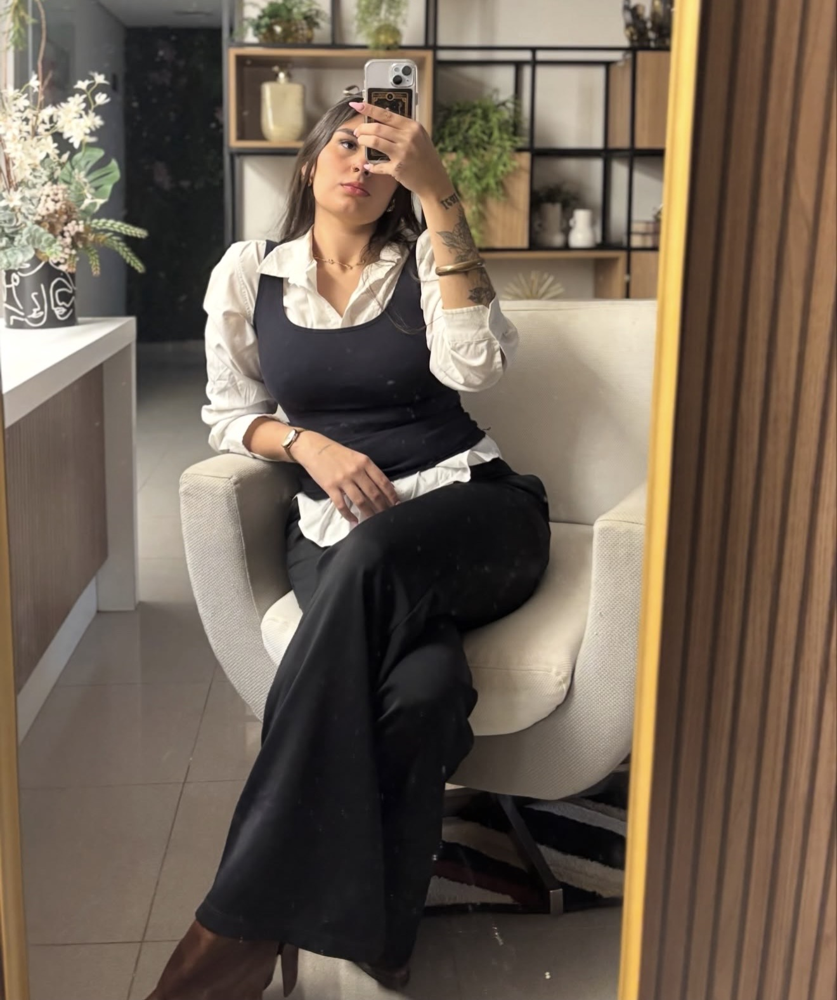

Relações Públicas
Estruturação de eventos, relacionamento institucional, networking e criação de oportunidades.
- Eventos on-line
- Networking corporativo
- Assessoria de imprensa
Relações Públicas · Comunicação · Estratégia
Estratégias de comunicação, imagem e relacionamento para marcas, empresas e talentos que querem ocupar espaços de forma autêntica e relevante.

INSIRAComunicação vai além da divulgação. Ela conecta pessoas, fortalece reputações e cria oportunidades.
Minha trajetória une comunicação, estratégia e gestão de relacionamento. Ao longo de diferentes experiências nas áreas Comercial, Marketing e Relações Públicas, desenvolvi uma visão ampla sobre posicionamento, relacionamento e crescimento.
Hoje, transformo essa experiência em estratégias capazes de aproximar marcas, empresas e talentos das pessoas certas — com intenção, identidade e relevância.
Projetos pensados para fortalecer presença, relacionamento e posicionamento.
Estruturação de eventos, relacionamento institucional, networking e criação de oportunidades.
Construção de narrativas e estratégias para marcas, empresas e CEOs ocuparem seus espaços.
Planejamento editorial e produção estratégica de conteúdo para fortalecer presença digital.
Estratégias de imagem e comunicação para artistas de funk, rap e trap.
Uma abordagem multidisciplinar
Da estratégia à execução, cada movimento precisa ter propósito.
Experiências em Comercial, Marketing e Relações Públicas formam uma visão integrada de negócio, comunicação e relacionamento.
Prospecção e fidelização, negociação, gestão de equipes, projetos publicitários, redes sociais e estratégias de atração e conversão.
Eventos, campanhas, posicionamento de marca, imagem institucional, social media, conteúdo, networking e oportunidades.
Gestão estratégica de imagem, assessoria de imprensa, campanhas de lançamentos e construção de oportunidades para artistas.
Meu objetivo é desenvolver estratégias que gerem impacto, construam relacionamentos sólidos e posicionem marcas e talentos de forma autêntica e relevante.